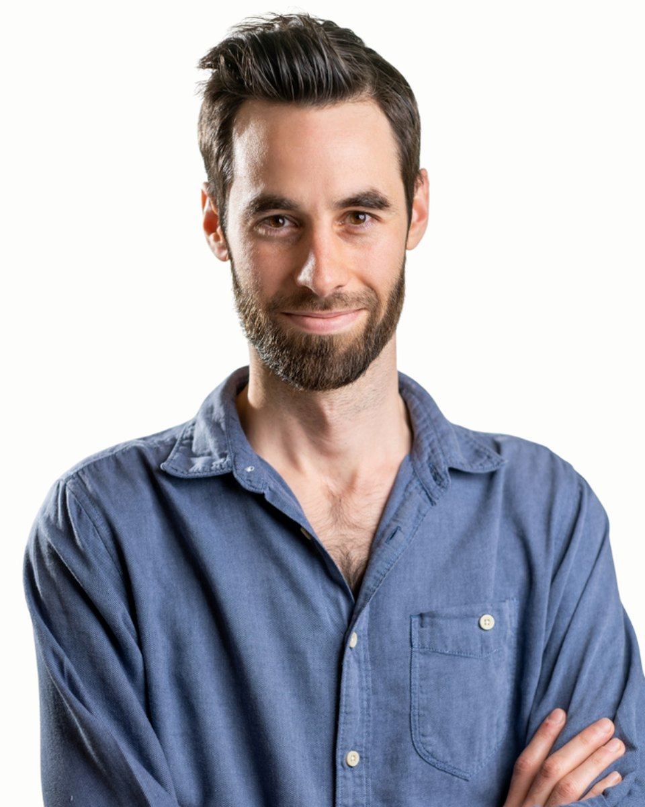

Klinikai szakpszichológus
Péteri
Dávid
Klinikai szakpszichológus, pszichoterapeuta-jelölt
Fogadó kolléga: Vajas Zsuzsanna, pszichológus asszisztens. +36 30 961 1364, hétköznap 9-15. Ő segít, ha nem biztos, hogy Péteri Dávid a megfelelő választás.
Eddigi életem során sokat utaztam, melynek köszönhetően szerencsém volt helyiekkel beszélgetni, kultúrájukat, gondolkodásukat megismerni; laktam és dolgoztam Indiában, Brazíliában, nyugat-európai országokban. Foglalkoztam fiatalokkal, idősekkel, menekültekkel, hajléktalanokkal, pszichiátriai nehézséggel vagy függőséggel élőkkel és hozzátartozóikkal, így megtapasztalhattam és bátran állíthatom, hogy könnyen a másikra hangolódok és hamar ráérzek a másik személy esszenciájára, igényeire, céljaira. Utazásaim alatt számtalanszor más utazók mellé sodort a sors: kis ideig együtt haladtunk tovább, megosztottuk egymással élményeinket, tapasztalatainkat, segítettük a másikat a fejlődésében, növekedésében, majd elbúcsúztunk. Úgy gondolom, a pszichológus és a segítséget kérő is útitársak, akik egy bizonyos időre együtt haladnak útjukon. A segítő irányt mutathat: megértéssel, feltétel nélküli elfogadással, a megfelelő kérdésekkel, visszajelzésekkel támogathatja a segítséget kérőt, aki talán nehézségbe ütközött vagy elakadt az útján; hiszem, hogy kötelessége is őt a legjobb tudása szerint saját működése, motivációi, vágyai mélyebb megértéséhez, elfogadásához vezetni. Ez lesz az az alap, ami segít a helyes döntések meghozatalában, a legnagyobb boldogságot rejtő útirány választásában.
Szeretettel várom Önt is, hogy belevágjunk egy közös utazásba!
Dear Visitor, welcome to my page!
In my life I have had the opportunity to travel, therefore I was lucky enough to get to know the locals, their culture, their way of thinking; I have lived and worked in India, Brazil, and in Western European countries. I have worked with the youth, the elderly, with refugees, homeless, addicts, people with psychiatric disorders and with their relatives, for this reason I can claim that I can easily find common ground with others, I am able to empathize with and understand the others' true nature, needs and goals. While on the road, often I found myself traveling with others: during the time we spent together, we shared our experiences with each other, helped each other in our self-improvement and personal growth, then said goodbye. In my opinion, the psychologist and the person asking for help are fellow travelers, who go on a shared path for a little while. The one that helps can provide guidance to the right direction: with empathy, unconditional acceptance and with the right questions, feedback he can support the other who has perhaps found obstacles or is lost on their way. I believe that it is my duty to help the other to a deeper understanding and acceptance of their behavior, motivations, desires. This will be the foundation that will guide the ones asking for help to make the right decisions and to choose the path that comes with the most happiness.
I look forward to starting a journey together!
Amiben segítek
Péteri Dávid saját megfogalmazásában
Elakadás a kamaszkorban, identitás kérdése
Elveszettség, céltalanság, lehangoltság érzése
Stresszel való megküzdés, életvezetési nehézségek
Szorongásos panaszok, pánik
Önbizalomhiány, önértékelési problémák
Elakadás a fiatal felnőttkorban, kapunyitási krízis
Párkapcsolati elakadás, szakítás/válás, családon belüli konfliktusok
Váratlan helyzet miatt kialakuló válságok, pl. munkahely elvesztése, betegség, haláleset
Függőségek
Önmegvalósítás, erőforrások keresése, kiteljesedés
Mélyebb önismeret
Difficulties in adolescence, the topic of identity, identity crisis
Feeling lost, purposeless, disconcerted
Coping with stress, difficulties in every-day life
Képzés és szakmai út
A képzések és a szupervízió az akkreditált szakképzőhely rendjében folynak. Mit jelent ez Önnek
Iskolai végzettség
Módszerspecifikus képzések
+ sajátélmény dr. Mészáros Judit kiképző terapeutánál, szupervízió Menyes Csaba pszichoterapeutánál (folyamatban)
Szakmai tapasztalatok
Education
Leiden University, Leiden, Netherlands
Eötvös Loránd Tudományegyetem (ELTE), Budapest, Hungary
Trainings, self-knowledge processes
+ Own experience with Dr. Judit Mészáros psychotherapist trainer, International Psychoanalytical Association
+ Supervision with Csaba Menyes psychotherapist (both ongoing processes)
Professional experiences
Rólam mondták
Kliensek visszajelzései, a hozzájárulásukkal
Kezdetben nagyon tartottam a beszélgetésektől, úgy éreztem, meg kell felelnem, mint ahogy mindenkinek az életben. De Dávid elfogadása, empátiája segített ezen túllendülni: most azt tapasztalom, hogy nemcsak minden beszélgetés után könnyebb vagyok (és van min elgondolkodnom, dolgoznom), de összességében is jobban értem, hogy mit miért csinálok, miért is vagyok olyan, amilyen. Egyre jobban el tudom fogadni és fel tudom vállalni magam.
Most már kevésbé vagyok magányos és lehangolt, hiszen a beszélgetések segítségével összeszedettebb, aktívabb lettem, új céljaim vannak, és az érzéseimet, igényeimet is jobban, asszertívebben ki tudom fejezni.
Dávid volt az első, aki elfogadott olyannak, amilyen vagyok, rámutatott értékeimre, illetve segített ráébredni, hogy bizony nem mindig én vagyok a hibás. Már egyre jobban értem a konfliktusaim eredetét, jellegét, és megtanultam kiállni magamért. Ezek miatt van, hogy a depresszióm sokkal ritkább és elviselhetőbb, és a pániktüneteim elmúltak.
Amikor Dávidhoz kezdtem járni, még nagyon visszahúzódó, bizonytalan voltam, sokat szorongtam, nem szerettem magamat. Ez fél év alatt rengeteget változott: úgy érzem, kinyíltam, és elkezdtem szeretni élni!
Ha inkább mást keresne
Három kolléga hasonló területekkel. A teljes regiszterben 37 szakember szűrhető.
Következő lépés
Időpont Péteri Dávidnél
Írjon nekünk, vagy hívja ügyfélszolgálatunkat hétköznap 9 és 15 óra között. Az első alkalom 50 perc, díja 18-25 ezer forint alkalmanként. Ha Péteri Dávid naptára tele van, megmondjuk, ki tud hasonló területen fogadni.